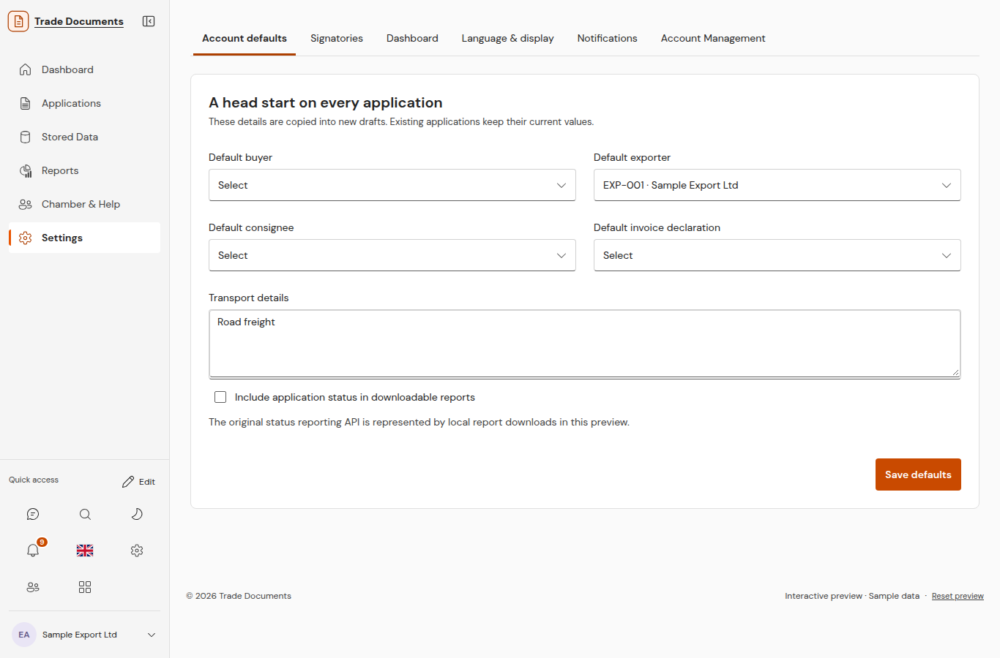
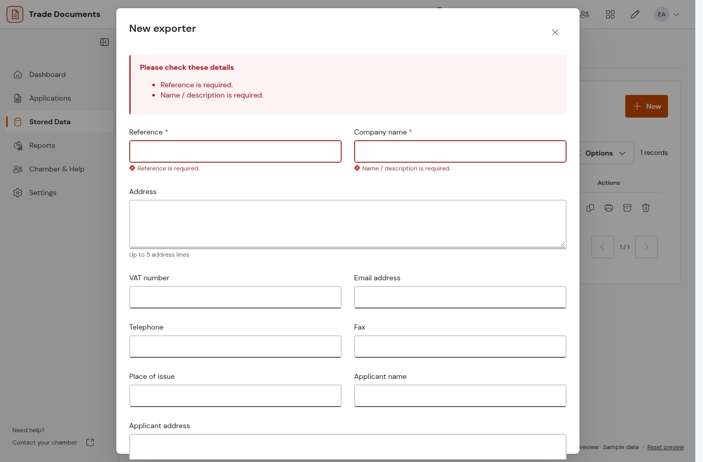
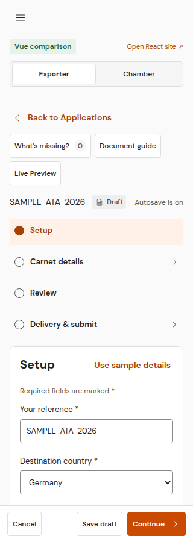
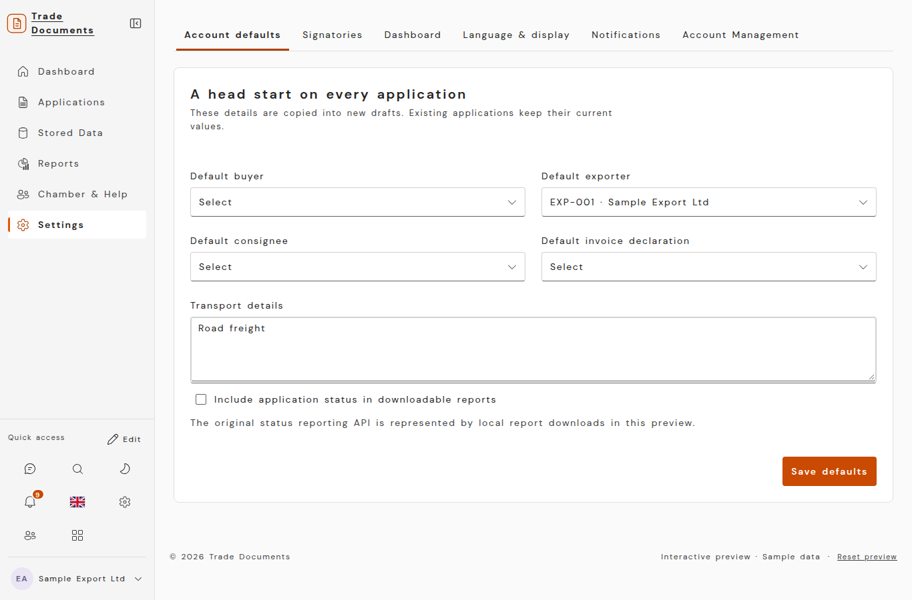
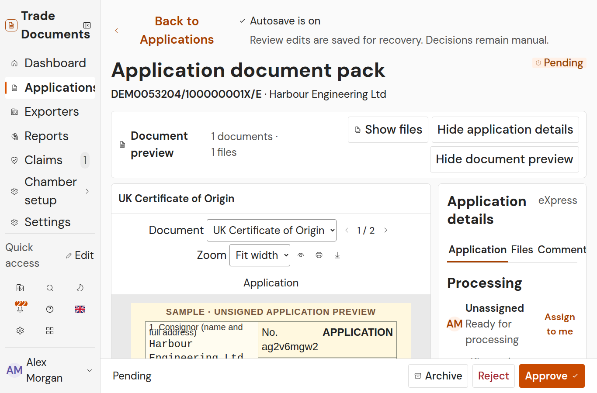

Accessibility fixes and the route to WCAG 2.2 AA
0reported violations in 36 representative page states
48additional narrow-screen and text-stress states scanned without reported violations
8 → 0React tab focus-sentinel violations in the original affected pages
What changed
The React section tabs used hidden, focusable controls supplied by the UI library. Those generated eight automated warnings across Settings, Stored Data and document review. The shared tab control now uses ordinary buttons with explicit tab roles, selection state and a labelled content panel. Arrow keys, Home and End select a tab; Tab moves into the panel. Arabic reverses the horizontal arrow direction.
This replaces the control causing the warnings. It does not hide findings from the accessibility scanner or modify the library’s focus-management elements. The same shared fix covers the Chamber exporter-account tabs.
In Vue, the document preview’s scrolling region now has a name and can receive keyboard focus. This fixes the keyboard-scroll violation found when larger text made the preview overflow.

Checks along the user journey
- Choose a section — improved and checked. React tabs have explicit relationships with their content, keyboard selection and visible focus. Forward keyboard sampling across eight React/Vue routes reached real, visible controls. This is not a complete screen-reader evaluation.
- Enter and correct details — sample validation checked. Empty new-record forms identify both required fields. React focuses its error summary; Vue focuses the first invalid field and associates the field with its error text. Typed and drawn signatures continue to save and survive reload in both workspaces.
- Read and process documents — keyboard improvement; document access needs work. Vue’s preview scroll area is keyboard reachable. Uploaded PDFs are rendered visually on a canvas in both versions. A filename and page label do not expose the document’s contents or reading order to a screen reader.
- Use a narrow screen or larger text — sampled; further zoom testing needed. No whole-page horizontal overflow was recorded in the 16 routes checked at 320 CSS pixels. Text-spacing overrides were also scanned and screenshots captured. A separate doubled-font stress test exposed cramped areas; see the limitations below.





What is still needed before claiming AA conformance
1. Provide an accessible way to read documents
Confirmed implementation gap: the embedded uploaded-PDF viewers use canvas rendering without an exposed PDF text layer. Both offer an original-PDF link, which can help when that original is accessible. Scanned or untagged files may still need OCR, corrected reading order and an equivalent accessible version. Adding a text layer alone would not guarantee that tables, signatures or complex forms are understandable.
Test representative uploaded, generated and stamped documents with a screen reader. Decide how inaccessible source files will be identified and remediated, and how the accessible version stays consistent with the document being approved.
Relevant criteria: 1.1.1, 1.3.1 and 1.3.2. WCAG: non-text content.
2. Complete real assistive-technology tasks
Run keyboard-only and screen-reader sessions in the supported browser combinations, including NVDA or JAWS on Windows and VoiceOver on Apple devices. Follow complete tasks: create and submit an application, correct an error, upload evidence, review a PDF, place a stamp, approve or reject, and return to the same queue.
Verify names, headings, reading order, error and save announcements, dialog focus restoration and focus visibility near fixed action bars. Test pointer placement of stamps without dragging, as well as keyboard placement. A keyboard alternative alone does not satisfy the separate single-pointer requirement for dragging.
Relevant criteria: 2.1.1, 2.4.3, 2.4.7, 2.4.11, 2.5.7, 4.1.2 and 4.1.3. W3C: dragging alternatives.
3. Finish zoom, contrast and interaction-state coverage
Check actual browser zoom at 200% and reflow at the equivalent of 320 CSS pixels, including open menus, dialogs, long records and both header layouts. Test focus, hover, selected, error and disabled states in light, dark and forced-colour modes. Review any small targets in context: target spacing and linked labels may satisfy an exception, so measuring an icon alone is insufficient.
Observed robustness issue: directly doubling every computed font size, while retaining existing line heights and fixed layout dimensions, produces cramped text and clipped navigation labels in places. This synthetic test is not equivalent to browser zoom and does not by itself establish a failure of 1.4.4. Prefer flexible heights and wrapping, then verify the actual supported enlargement mechanism.
Relevant criteria: 1.4.3, 1.4.4, 1.4.10, 1.4.11, 1.4.12 and 2.5.8. Text resizing · Reflow · Target size.
See the doubled-font stress screenshot

4. Evaluate the real production services
The current browser-only preview cannot validate real sign-in, session expiry, payment, server failures or multi-user processing. Check accessible authentication, avoiding unnecessary repeated entry, error prevention for consequential submissions and recovery from interrupted saves when those services exist. Also verify language changes, Arabic reading order and translations with fluent users and assistive technology.
Relevant criteria include 2.2.1, 3.3.4, 3.3.7 and 3.3.8. Accessible authentication · Redundant entry.
Evidence and limits
Cloud Chrome and axe-core 4.11 checked fresh sample workspaces, without changing the user’s saved records. No software was installed on the user’s PC. The release is 2026-11-19-wcag22-r1. The linked runs record the exact tested commits; the final confirmation includes the subsequent signature-contrast fix.
- 36 representative page/display states: zero reported violations. Coverage includes both versions’ dashboards, Applications, Claims, Exporters, reports, Stored Data, Settings and document workflows, plus selected mobile and Arabic dark-theme queues.
- 16 routes × three display conditions: 320 CSS pixels, WCAG text-spacing values and the synthetic doubled-font stress test. All 48 raw violation arrays were empty. Two additional validation-dialog scans also reported no violations.
- The full regression run passed 68 business-rule tests, 96 navigation/interface checks, 16 signature checks, 14 table-layout checks and 15 accessibility follow-ups. The follow-ups calculated 27 visible text/background pairs from previously incomplete results; all met their applicable text-contrast threshold.
- Automated “incomplete” results remain review items, not passes or failures: colour contrast in some fields/documents, and focus-management nodes/background hiding in an open React dialog. One large review tabpanel was flagged by a centre-point obstruction heuristic; that does not establish that the focused component is entirely hidden. Actual keyboard and screen-reader review remains necessary.
A repeated signature-dialog scan located a 4.27:1 contrast failure on the newly enabled “Use this signature” action. Both versions now give this action a stable, darker background without a colour/opacity transition. Diagnostic results are retained, and the final confirmation includes the signature workflow.
Wider accessibility evidence · Passing full regression run · Additional dialog, Arabic-tab and signature checks. Cloud artifacts have limited retention; the screenshots shown here are retained with the release.
Conformance position: the known tab violations are fixed and sampled automated results are clear. AA conformance requires evaluation of full pages and complete processes, including manual checks. Use a criterion-by-criterion record of results and exceptions before making a public accessibility claim. W3C conformance evaluation guidance.